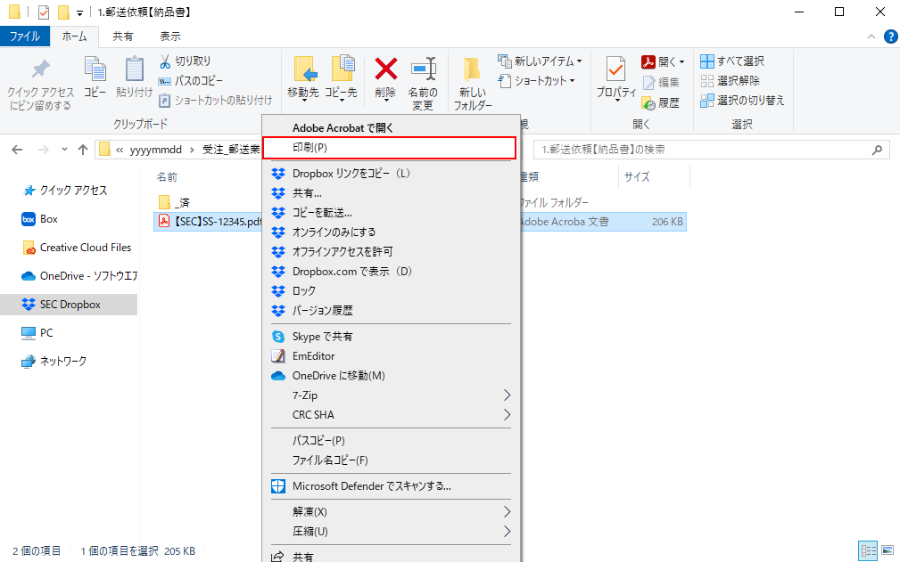

2.2PDFファイルを印刷、封緘する
１．ダウンロードしたPDFファイルを印刷します。
|
 |
２．PDFファイルが格納されていた「#郵送業務依頼共有」のフォルダに合わせ封筒・送付状を用意します。フォルダと封筒の組み合わせは以下の通りです。
|
1.郵送依頼【納品書】 |
納品書封筒(青) 検収用封筒(緑)（返信用封筒） 送付状（納品書） |
|
2.郵送依頼【納品書（特定）】 |
納品書封筒(青) 検収用封筒(緑)（返信用封筒） 送付状（特定） |
|
3.郵送依頼【納品書（リース会社）】 |
納品書封筒(青) 検収用封筒(緑)（返信用封筒） 送付状（リース） |
|
4.郵送依頼【請求書】 |
請求書封筒(白) |
重要
検収用封筒(返信用)を同封する場合は切手の貼り付けを忘れないよう注意してください。
３．印刷したPDFファイルを3つ折りにし、手順2で用意した封筒に封入します。
４．測量器で送料を封筒に印字します。
参考/ヒント
速達指定がある場合は、速達を選択し送料を印字してください。
５．担当者にチェックを依頼します。
参考/ヒント
チェック担当者はPDFファイルを開き、封入されている印刷物と相違がないことを確認してください。
６．封筒を封緘します。
重要
18時30分の集荷までにポストへ投函し、作業は終了です。